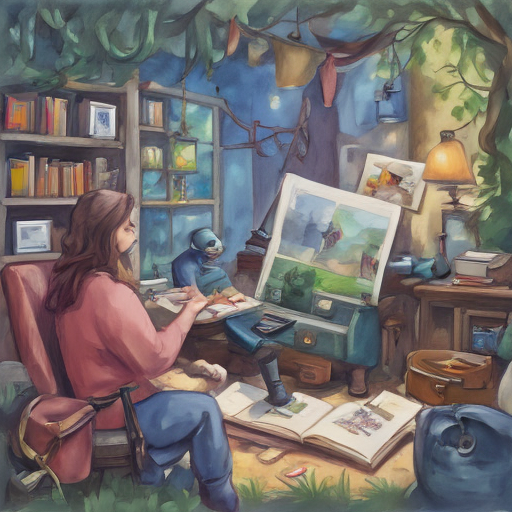

Today in my spare time, I indulged in some gaming as usual. After the long-awaited Call of Duty battle royale ended without a clear winner, I decided to dive into the Reader Q&A section online. It's always fascinating to see how people interpret complex issues and solutions. The election deadlock had everyone on edge, and these Q&As offered varied perspectives that kept me engaged for hours.

Keywords: Call of Duty, Reader Q&A, election deadlock
Fictional diary entry.